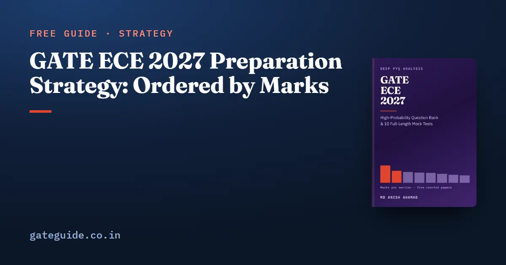

GATE ECE 2027 Preparation Strategy: Ordered by Marks

Most GATE ECE plans fail in the same place: they walk the eight technical sections in the order the syllabus prints them, giving Electromagnetics the same weight as Networks. This guide does the opposite. It orders your preparation by what the sections were actually worth in five GATE EC papers counted question by question against their official answer keys — 2010, 2019, 2020, 2025 and 2026 — and turns that order into a twenty-week plan, an eight-week plan and a two-week plan.
In this guide
Key takeaways
- The paper is 65 questions and 100 marks in three hours. General Aptitude was exactly 15 marks in all five counted papers; the other 85 marks split across eight technical sections.
- Ordered by counted mean, the sections run 17.0, 12.0, 10.8, 10.0, 9.8, 8.8, 8.0, 7.4 — a ratio of about 2.3 to 1 between largest and smallest, not 5 to 1.
- Thirty-five of the 65 questions are worth 2 marks, and together they carry 70 of the 100 marks.
- A blind four-option MCQ guess has an expected value of exactly zero. Eliminating one option makes it positive. Numerical-answer and multiple-select questions carry no negative marking, so they are never left blank.
- GATE 2027 is organised by IIT Madras. Dates and fees change, so confirm them against the current notification at gate2027.iitm.ac.in.
The paper you are actually preparing for
One paper, 65 questions, 100 marks, three hours. Fifteen of those marks are General Aptitude, which is common to every GATE paper and is not an EC subject. That leaves 85 technical marks across Engineering Mathematics; Networks, Signals and Systems; Electronic Devices; Analog Circuits; Digital Circuits; Control Systems; Communications; Electromagnetics.
The question count follows from the marks. Ten aptitude questions worth 15 marks must be five 1-mark and five 2-mark items, leaving 55 technical questions worth 85 marks, or 25 one-mark and 30 two-mark items. So the paper is 30 one-mark and 35 two-mark questions, and the 2-mark questions carry 70 of the 100 marks.
The GATE 2027 sessions fall in February 2027, but exam dates, the application window and the fee all change from cycle to cycle. Check the current notification on the official portal before building a calendar around any of them, and see the GATE 2027 exam date schedule for the shape of the cycle.
Order the sections by marks, not by syllabus number
These are counts, not compilations. Each column is one paper read question by question and reconciled to 65 questions and 100 marks.
| Section | 2010 | 2019 | 2020 | 2025 | 2026 | Mean |
|---|---|---|---|---|---|---|
| General Aptitude | 15 | 15 | 15 | 15 | 15 | 15.0 |
| Networks, Signals and Systems | 21 | 14 | 17 | 13 | 20 | 17.0 |
| Engineering Mathematics | 10 | 13 | 13 | 15 | 9 | 12.0 |
| Analog Circuits | 9 | 9 | 11 | 13 | 12 | 10.8 |
| Communications | 9 | 10 | 9 | 12 | 10 | 10.0 |
| Digital Circuits | 6 | 10 | 11 | 9 | 13 | 9.8 |
| Electronic Devices | 9 | 11 | 10 | 7 | 7 | 8.8 |
| Control Systems | 8 | 9 | 6 | 10 | 7 | 8.0 |
| Electromagnetics | 7 | 9 | 8 | 6 | 7 | 7.4 |
Three things in that table change a plan.
The gap between sections is smaller than most plans assume. Largest to smallest is 17.0 against 7.4. If your schedule gives Electromagnetics a tenth of what it gives Networks, it is not following the paper. No technical section has ever fallen below 6 marks in a counted year.
Digital Circuits outranks Electronic Devices, and it is the section that moves most. Its counted mean is 9.8 against 8.8, and it ran from 6 marks in 2010 to 13 in 2026. A plan that treats it as a small section is arguing with the count.
The top three behave as one block. Networks, Engineering Mathematics and Analog Circuits together came to 40, 36, 41, 41 and 41 marks across the five counted papers, while the ranking inside the block reversed: Networks 20 and Mathematics 9 in 2026, Mathematics 15 and Networks 13 in 2025. Prepare the block; do not bet on which of the three is biggest. The full per-section picture is in the GATE ECE subject-wise weightage guide.
The twenty-week plan
Twenty weeks before a February exam puts your start in the second half of September. The shape is simple and it is not the shape a textbook suggests.
Start with your weakest section's analysis, not your favourite one, and read its counted weightage and its topic map before any theory. Those two pages tell you what the last five papers actually asked of that section, and they usually contradict the order a textbook prints its chapters in.
Then work the sections in descending order of counted marks: Networks, Signals and Systems first, then Engineering Mathematics and Analog Circuits, then Communications and Digital Circuits, then Electronic Devices, Control Systems and Electromagnetics. Attempt a section's questions only after a first full theory pass.
General Aptitude sits outside this ordering because it was exactly 15 marks in every counted paper and needs steady maintenance rather than a block of weeks.
The eight-week plan
Skip the analysis prose on a first pass. Go straight to each section's prediction summary and its topic map, attempt only the higher-confidence questions, and read the solution to every question you got wrong rather than only the ones you could not start.
Two sections repay this treatment more than the rest. Networks, Signals and Systems carries the most marks in the paper and contains the single most reliable regularity in the whole counted set: a two-port question appeared in all five counted papers, exactly one per paper. Engineering Mathematics is the most evenly spread section, so a thin pass over all six of its areas beats a deep pass over two.
The two-week plan
Prediction summaries and topic maps, and nothing else. Then the Tier 1 questions in the four heaviest sections. Do not start a new topic in the last fortnight — finish the ones you have already half-learned, because that is where the marks closest to you are sitting.
When to take mock tests
Not early, and not all at the end. A mock test is a measuring instrument, and using one before there is anything to measure tells you only that you are unprepared.
Take the first one when you have finished a first pass over the four heaviest sections — Networks, Engineering Mathematics, Analog Circuits and Communications — which is roughly half the technical paper. Then one every week or ten days, in a single unbroken 180-minute sitting, scored with the official marking scheme, before you look at any solution. The score matters less than the pattern of the losses: a section you lose marks in twice is a section to go back to, and a section you lose marks in once was probably a bad half-hour.
The arithmetic that decides when to guess
This is the part of exam strategy that is not a matter of opinion.
- A wrong MCQ costs mark on a 1-mark question and mark on a 2-mark question.
- A wrong NAT costs nothing.
- A wrong MSQ costs nothing, and MSQ carries no partial credit — every correct option and no incorrect one, or zero.
For an MCQ of face value marks with options still standing after elimination, the penalty is , so the expected value is
| Options left | Expected value | 1-mark MCQ | 2-mark MCQ |
|---|---|---|---|
| 4 — blind guess | 0 | 0.000 | 0.000 |
| 3 — one eliminated | +0.111 | +0.222 | |
| 2 — two eliminated | +0.333 | +0.667 | |
| 1 — known | +1.000 | +2.000 |
Three consequences:
- A blind four-way guess is exactly break-even. Not slightly bad, not slightly good — zero, at both mark weights. So "leave it blank" and "guess everything" have the same expected score, and the choice between them is about variance, not marks.
- One elimination is worth a ninth of the question. Do it on ten 2-mark MCQs and you have made 2.2 marks appear out of nothing, bought entirely with knowing that one option has the wrong sign or the wrong dimensions. That is why trap lists are worth memorising even for questions you cannot solve.
- Never leave a NAT or an MSQ blank. In the counted papers, 2025 carried 26 zero-penalty questions and 2026 carried 23 — between a quarter and a third of the paper with no downside at all. A blank NAT and a wrong NAT score the same.
Rehearse this on a full paper rather than in the hall. Write in the margin how many options you had left on every MCQ you could not solve, then check afterwards: the questions should have paid about a third of face value and the ones about nothing. Do it once and the decision becomes a reflex instead of a hesitation. For where the numerical-answer questions actually sit, work from the official EC papers themselves, which the organising institutes publish free.
Put scheduled hours on the 2027 additions
The 2027 syllabus differs from 2026 in exactly four places: FIR and IIR filter design newly named in Networks, Signals and Systems; PID control replacing the lag and lead-lag compensation lines in Control Systems; correlation and regression analysis entering Engineering Mathematics while nonlinear first-order differential equations leave; and energy-band formation together with MOSFET scaling entering Electronic Devices. Twelve phrases were added and five removed, and Digital Circuits and Electromagnetics did not change at all.
Two of those four are newly named rather than new ground. Filter design was asked twice in 2019, at Q39 and Q54, by IIT Madras — the institute setting 2027. Correlation was already asked in 2026, at Q38; regression itself was not. Only PID control and the energy-band and scaling pair have no counted precedent, and those are the two that genuinely need fresh hours. The line-by-line comparison is in the GATE ECE 2027 syllabus changes guide, and where those marks sit is in the subject-wise weightage guide.
This guide gives you the ordering and the arithmetic. The GATE ECE 2027 book carries the twenty-week plan week by week with its eight-week and two-week versions, the 78 recurring concepts ranked with the reason for each rank, and ten full-length mock tests built to the counted shape of the paper.
Frequently asked questions
How many hours a day do I need for GATE ECE 2027?
There is no verified figure for this and anyone quoting one is guessing. What can be checked is the ratio between sections. The counted means run from 17.0 marks for Networks, Signals and Systems down to 7.4 for Electromagnetics, a ratio of about 2.3 to 1. Whatever your daily total is, split it in roughly that proportion rather than equally.
Which subject should I start with for GATE ECE?
Networks, Signals and Systems. It carried a counted mean of 17.0 marks across 2010, 2019, 2020, 2025 and 2026, more than any other technical section, and its lowest counted year was still 13 marks. It is also the language the Analog Circuits, Control Systems and Communications questions are written in, so time spent there pays twice.
Should I guess in GATE ECE if I do not know the answer?
For a numerical answer or a multiple-select question, always, because neither carries negative marking. For a four-option MCQ with nothing eliminated, the expected value is exactly zero, so guessing neither helps nor hurts your expected score. Eliminate even one option and the expected value turns positive, so answer it.
When should I start taking GATE ECE mock tests?
After a first full pass over the four heaviest sections, which is roughly half the technical paper, and then one every week or ten days in a single unbroken 180-minute sitting. Score each one with the official marking scheme before you look at any solution. A mock taken before there is anything to measure only tells you that you are unprepared.
Is two months enough to prepare for GATE ECE 2027?
It is enough to convert half-learned topics into marks and not enough to learn the paper from zero. An eight-week plan should skip the analysis prose, work from each section's topic map and prediction summary, and attempt only the higher-confidence questions. Do not open a new topic in the final fortnight.
What changed in the GATE ECE syllabus for 2027?
Four places, against the 2026 text. FIR and IIR filter design is newly named in Networks, Signals and Systems. PID control replaces the lag and lead-lag compensation lines in Control Systems. Correlation and regression analysis enters Engineering Mathematics while nonlinear first-order differential equations leave. Energy-band formation and MOSFET scaling enter Electronic Devices.
Sources
- GATE 2027 official website (IIT Madras)
- GATE official paper archive (IIT Madras)
- GATE official paper archive (IIT Guwahati)
- GATE official paper archive (IIT Roorkee)
Dates, fees and the syllabus are set by the GATE 2027 organising institute and can change. Always confirm at gate2027.iitm.ac.in.